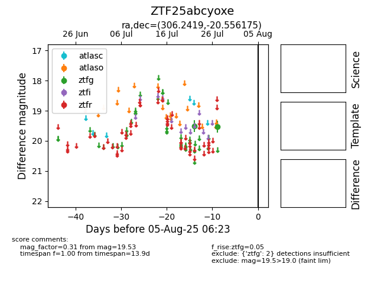

Target ZTF25abcyoxe at 2025-08-05 07:33, see:
FINK: fink-portal.org/ZTF25abcyoxe
Lasair: lasair-ztf.lsst.ac.uk/objects/ZTF25abcyoxe
ALeRCE: alerce.online/object/ZTF25abcyoxe
alt names
ZTF25abcyoxe (ztf,fink)
coordinates:
equatorial (ra, dec) = (306.2419,-20.55617)
galactic (l, b) = (23.4815,-29.39480)
photometry
last ztfg=19.53
2 ztfg detections
